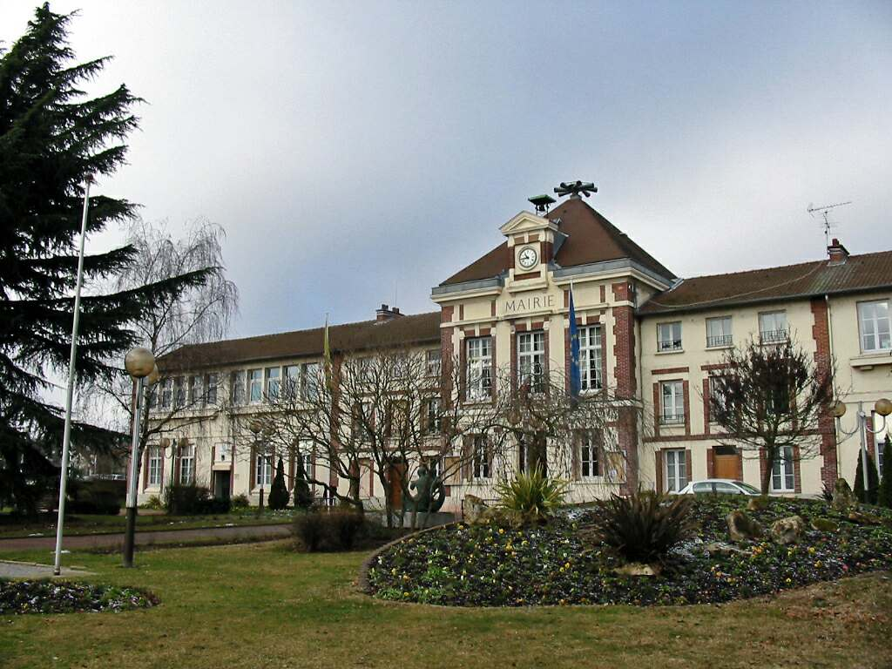

Lycée Vincent Van Gogh
Aubergenville · Enseignement général
RÉGLAGES
←→ naviguer · 1–0 rubrique · Échap quitter
BTS SIO · SISR · 2025—2027
L’infrastructure.
En toute confiance.
Apprenti administrateur systèmes et réseaux.
La technique au service de ceux qui l’utilisent.
LE PROFIL
Je suis Farès Aref, 18 ans, étudiant en BTS SIO option SISR à H3 Campus, Poissy.
En alternance à la DSI de la Mairie de Mantes-la-Ville, je participe au fonctionnement quotidien des systèmes, des réseaux et des postes de travail. Mon fil conducteur : comprendre, résoudre et rendre les services numériques plus fiables.
Certifications : PIX · SecNumacadémie ANSSI
Langues : français · anglais
Aubergenville · Enseignement général
Mention assez bien · NSI & SES
Option chinois LV3
H3 Campus, Poissy · Solutions d’infrastructure, systèmes et réseaux. Alternance à la DSI de Mantes-la-Ville.
Poursuivre vers l’administration et la sécurité des systèmes et des réseaux.
MON ALTERNANCE / DSI

Direction des Services d’Information
Photo : Spedona, mars 2006 · CC BY-SA 3.0 · Image recadrée.
UNE INFRASTRUCTURE UTILE
La mairie accompagne environ 20 000 habitants : administration locale, services sociaux, urbanisme et équipements municipaux.
Au sein de la DSI, je participe à la gestion des postes, des serveurs, des réseaux, de la téléphonie et des applications métiers, afin de contribuer à la continuité des services numériques.
LE QUOTIDIEN À LA DSI
Assistance téléphonique et sur site. Diagnostic et résolution des incidents de niveau 1 et 2 pour les agents municipaux.
ASSISTANCE / GLPIInstallation, configuration et maintenance des postes Windows 10/11. Inventaire et suivi des déploiements.
WINDOWS / ATERAGestion d’Active Directory : création des comptes, attribution des droits d’accès et diagnostics de connectivité.
ACTIVE DIRECTORY / TCP/IPInstallation et dépannage des imprimantes, des scanners et des équipements de téléphonie IP sur les différents sites.
MATÉRIEL / TÉLÉPHONIESensibilisation des agents, mises à jour de l’antivirus, gestion et contrôle des sauvegardes, notamment sur bandes LTO avec Veeam.
SOPHOS / VEEAMRédaction de procédures techniques et traçabilité des interventions pour faciliter le travail de l’équipe.
PROCÉDURES / TICKETINGRÉALISATIONS PROFESSIONNELLES
Quatre projets en environnement réel.
Les objectifs, la démarche et les preuves.
MON ENVIRONNEMENT TECHNIQUE
Niveaux de maîtrise auto-évalués.
VEILLE TECHNOLOGIQUE
BILAN & PERSPECTIVES
L’intégration dans une équipe informatique, la diversité des technologies, une progression vers davantage de responsabilités et un contact direct avec les utilisateurs.
Les architectures réseau avancées, les VLAN et le routage, l’administration Linux, l’écriture de scripts plus complets et la virtualisation.
ET SI ON ÉCHANGEAIT ?
Île-de-France · Français / Anglais
Mon nom, mon e-mail et mon profil LinkedIn s’ajoutent à vos contacts.
Enregistrer la fiche contact ↓BTS SIO · SISR · SESSION 2027
Mes réalisations professionnelles et les compétences mobilisées, réunies dans un document.
DOCUMENT PDF · ÉPREUVE E5